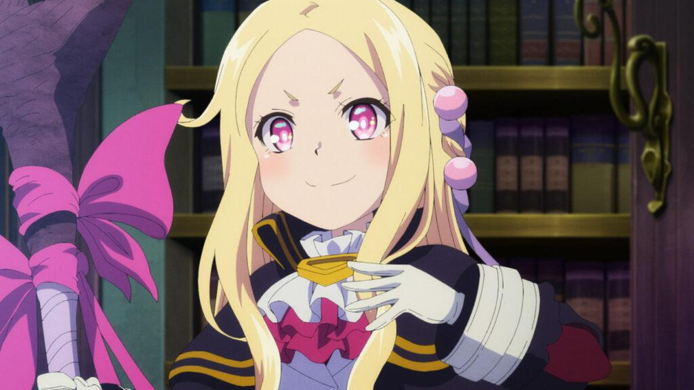
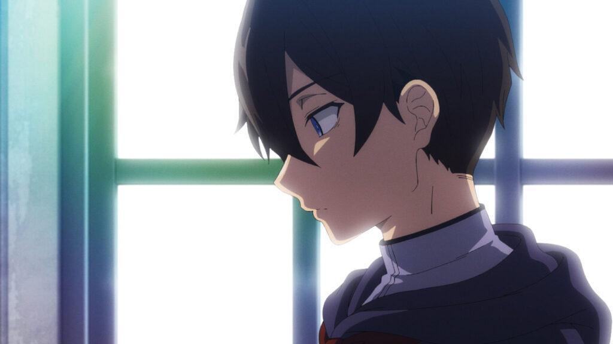
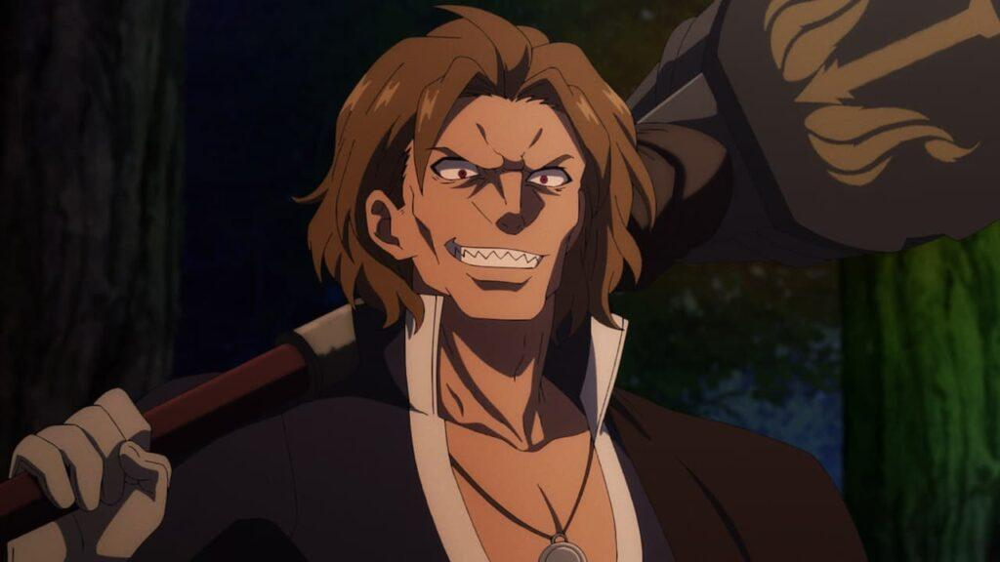
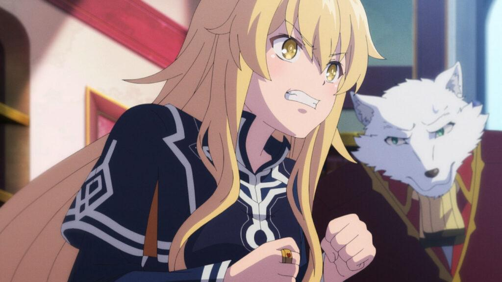
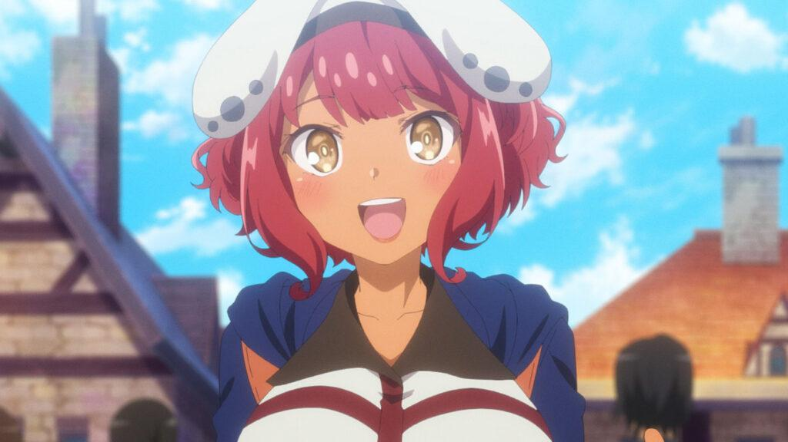
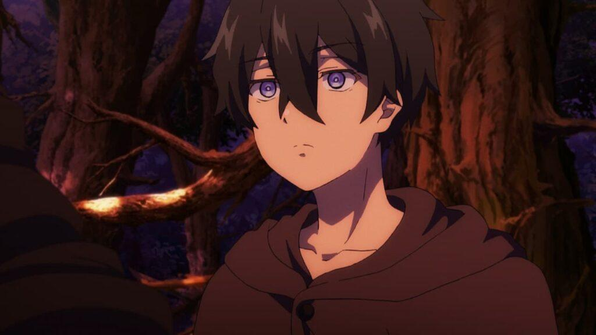
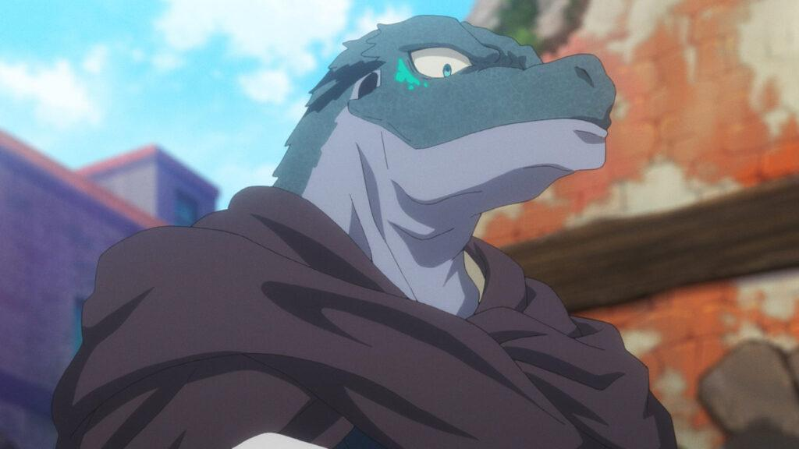
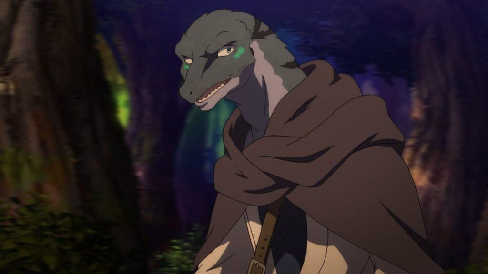
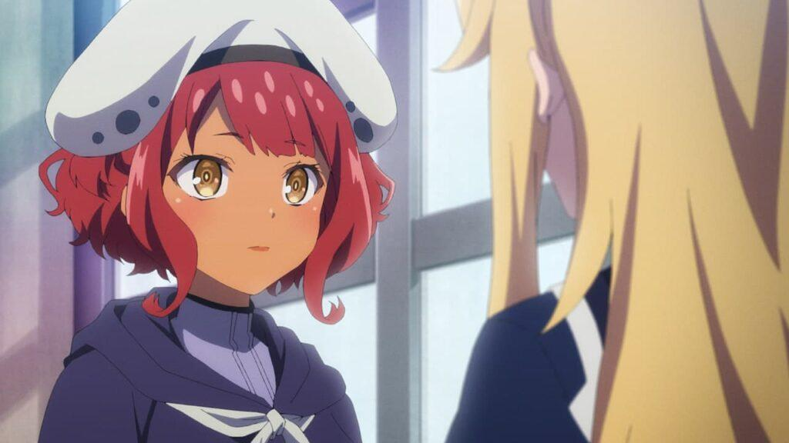
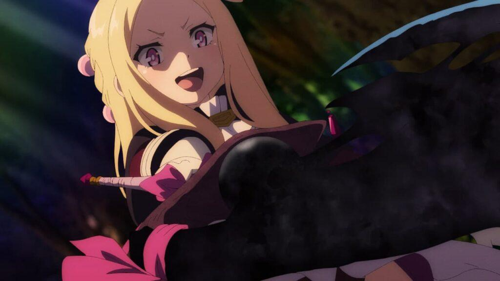

Reseña | Mahoutsukai Reimeiki — Capítulo 1 y 2
Capítulo 1: El mal alumno y la bruja de báculo
En la gran Academia Real de Magia del Reino de Wenias hay un gran alborto por la citación de un peculiar alumno por parte del director. Todos los estudiantes se preguntan a qué se debe tal evento, teniendo en cuenta que es el alumno con peores calificaciones en toda la Academia. ¿Lo expulsarán? ¿Qué querrá la directora Albus con el joven Saybil? Las especulaciones surgen de los curiosos estudiantes en el capítulo 1 de Mahoutsukai Reimeiki.
Poco después, Saybil recorre los pasillos para dirigirse al despacho de la directora, cuando se encuentra a una niña pequeña gritando a una puerta cerrada. La intrusa llamada Loux Krystas desea entrar a hablar con la directora Albus, pero parece que no es una presencia bienvenida a la academia. Luego de un forcejeo con el sirviente bestia Holdem, Albus por fin sale a recibir a su invitado.
A Saybil se le expone la razón por la cual fue citado: Para enviarlo a un entrenamiento especial. Él y algunos otros de sus compañeros serán enviados al sur—cerca de donde aún existe animosidad contra las brujas— para apoyar en el proyecto de la creación de un pueblo donde las brujas puedan ser tratadas como personas. Si el joven no demuestra mejoría en sus habilidades en tres años, será expulsado de la Academia, y lo que eso conlleva.
Y así, el joven Saybil se pone en marcha hacía el sur, acompañado por la mejor estudiante de la Academia, Holt, y un grupo más de estudiantes. Sin embargo, el viaje no será tan pacífico como lo esperan los jóvenes, pero tienen la suerte de contar con La Bruja del Amanecer Loux Krystas, quien ha forzado su participación en la misión con un objetivo claro: Leer el Grimorio de Zero.
Capítulo 2: No digas que los traicioné
Saybil y Holt han encontrado la cola de Kudo cortada, y tres diferentes huellas cerca de ese lugar. De repente, Holt comprende la gravedad de la situación. El enemigo es solo uno, y ni siquiera Kudo, que usa magia, logró vencerlo. Un enemigo tan formidable para lograr acorralarlos hasta ese punto solo puede ser alguien que perteneció a Los Árbitros de Dia Ignis.
Mientras tanto, Kudo se encuentra huyendo por su vida. Escondido, ve de lejos a sus perseguidores, buscando la oportunidad de correr, no obstante, cae en algunas trampas que lo hieren y alertan al enemigo. Luego de ser acorralado, se da cuenta que su perseguidor es, en efecto, de Los Árbitros de Dia Ignis, y no tiene oportunidad alguna de escapar. “El Tirano” es demasiado fuerte para él.
Si embargo, se resiste con todas sus fuerzas, hasta que llega Loux a rescatarlo, demostrando que ella es una poderosa bruja. “El Tirano” se encuentra acorralado, sin muchas opciones, pero la imprudencia de un par de adolescentes le da una última oportunidad de escapar. Toma de rehén a Saybil y obliga a Loux a rendirse y entregar su arma.
Pero la situación no sale como el Árbitro quiere, ya que sufre la traición de un supuesto aliado, lo que aprovecha Saybil para sacrificar su vida para salvar la de sus compañeros. El joven usa el Bastón de Ludens para evitar que Holt muera, lo que desvela un secreto de su propia naturaleza.
Opinión del capítulo 1 de Mahoutsukai Reimeiki
Ha llegado la primera entrega de Mahoutsukai Reimeiki (The Dawn of the Witch), una adaptación animada de la historia escrita por Kakeru Kobashiri e ilustrada por Takashi Iwasaki. Tezuka Productions es el estudio que se encarga de traernos esta joya a nuestros monitores, que, sí alguien no se ha dado cuenta aún, está ambienta en el mismo mundo que Zero kara Hajimeru Mahō no Sho.
En el capítulo 1 de Mahoutsukai Reimeiki nos presenta al que será el protagonista de la historia, llamado solamente Saybil, un joven amnésico que lucha por aprender magia en la Academia, pero no se desarrolla como desea. Preocupada por su situación, la directoria Albus lo manda a un entrenamiento especial donde comenzarán sus aventuras, y se encontrará a si mismo, y a su magia.
El episodio está lleno de información, y varios personajes ya conocidos vuelven a hacer su aparición; en especial uno de ellos, cuya relación con nuestro protagonista nos deja intrigados desde los primeros segundos del capítulo. ¿Quién es en realidad Saybil? ¿Por qué perdió sus recuerdos? ¿Por qué no puede controlar su magia? ¿Qué tanto sabe sobre esto la directoria Albus?
Antes de continuar con la reseña, vamos a hacer algunas anotaciones. Esta es una reseña doble de capítulo 1 y 2 de Mahoutsukai Reimeiki, eso debe estar claro. Aclarando, estos párrafos que escribiré sobre el primer episodio los escribí sin haber visto el segundo, por lo que no habrá ninguna referencia, y quizás pueda decir algo que pueda contradecirse después. Están advertidos.
El nuevo Kirito
No podemos decir mucho de Saybil que no hayamos dicho antes, pero intentemos profundizar un poco más. Un chico amnésico que solo recuerda los tres años que ha pasado en la Academia, y en su afán por preservar ese tiempo en su memoria, lucha por mejorar sus habilidades en la magia para evitar la expulsión, ya que eso implica que le sallarán esos recuerdos. Clásicos problemas adolescentes.
Vemos que es un chico amable, aunque bastante retraído y muy poco expresivo. Debido a su poco talento para la magia es víctima de acoso escolar, o por lo menos lo fue alguna vez. Por lo que puedo entender de su situación actual, parece que fue condenado principalmente al ostracismo. Parece que la mayoría de sus compañeros piensan que debería ser expulsado.
El capítulo 1 de Mahoutsukai Reimeiki nos presenta una clásica situación que se repite en bastante animes shounen; un joven incomprendido que todo mundo menosprecia, pero aún así conserva su alma amable. Claro, esa descripción del cliché no está completa, ya que solo falta que Saybil demuestre tener un talento oculto que lo volverá el más fuerte de todos lo magos. Y este parece ser el caso.
Es simple. Saybil mencionó que cuando intenta hacer magia esta se descontrola; y si intenta controlarla, el hechizo no activa. Tener un poder difícil de controlar suele ser indicador de tener un poder abismal, mucho más grande que el de los demás, donde métodos de control que ha aprendido no le son útiles. Quizás necesite aprender una forma distinta de magia.
La genio y la bestia
Saybil contará con el apoyo de varios personajes, uno de ellos parece ser Holt, la genio de la Academia. Una chica que ha demostrado ser bastante misteriosa, dando a entender en algunas escenas que oculta algo importante. Como cuando llega a presentarse con Saybil y Loux. Poco después, retrasa su partida bajo el pretexto de comer antes de irse, luego de ver a uno de los Cazadores de Brujas que atacan más adelante en la historia.
En otra escena logramos ver en ella un prejuicio negativo contra la gente Bestia. Cuando se presenta el siguiente protagonista, Kudo, Holt se muestra un poco agresiva con él, y cuando se menciona que fue atacado por los Cazadores, ella reacciona cubriendo sus ojos con su sombrero, ¿Esa reacción se debe a las palabras que le dedicó a Kudo antes, o porque ella tiene algo que ver con el ataque?
Como podemos ver, los Cazadores de Brujas tienen bastantes prejuicios no solo con las brujas, sino también con las Bestias que se supone que crearon para servirles. ¿Holt será un espía de los Cazadores? ¿Será el informante que se mencionó antes? Ese prejuicio fue lo que llevó a estas personas a atacar primero a Kudo, por lo que se intuye que es un sentimiento bastante fuerte.
Kudo tiene que soportar mucho debido a su naturaleza. Soportar el constante odio y temor debe ser difícil, ¿Cómo fue que aún así sienta que debe proteger a otros? Kudo no ha tenido mucho protagonismo en el capítulo 1 de Mahoutsukai Reimeiki, por lo que esperemos que próximamente conozcamos su pasado.
Viejos conocidos
Antes de continuar con la reseña, vamos a hacer algunas anotaciones. Esta es una reseña doble de capítulo 1 y 2 de Mahoutsukai Reimeiki, eso debe estar claro. Aclarando, estos párrafos que escribiré sobre el primer episodio los escribí sin haber visto el segundo, por lo que no habrá ninguna referencia, y quizás pueda decir algo que pueda contradecirse después. Están advertidos.
Vamos, da gusto ver a viejos conocidos de nuevo. Hace un par de años llegué a Zero kara Hajimeru Mahō no Sho buscando algún anime que ver entre la larga lista de anime del género fantástico que hay. Hay que aceptarlo, no todos son buenos, pero cuando encuentras una joyita desconocida, es bastante emocionante, y Zero no Sho es una de ellas. Repasemos las referencias que detecté en el capítulo 1 de Mahoutsukai Reimeiki. Alerta de Spoiler.
Al parecer, Mahoutsukai Reimeiki se desarrolla 10 años después de los eventos mostrados en Zero no Sho. La guerra que comenzó Trece apenas terminó 5 años antes, pero los esfuerzos del ahora mago maligno al difundir el conocimiento del Grimorio de Zero ayudaron a sentar las bases del reino de Wenias, ahora pro magia. Todo esto lo cuenta la ya adulta Albus.
Debo confesar que no reconocí a Albus cuando se mencionó, ni cuando hizo su aparición. Ni siquiera noté a Holdem cuando se dispuso a proteger a Saybil. No tengo tan bueno memoria para recordar los nombres de personajes de un anime de una temporada que vi en una sola madrugada hace un par de años. Eso sí, a Zero la reconocí de inmediato, porque, ¿Quién olvida a una waifu albina kawaii?
Esta entrega ha resuelto algunas dudas que se plantearon en el anterior, aunque en algunas otras solo ha dado un poco de luz. Por ejemplo, ahora sabemos que Holt siempre ha sido una espía enviada por la iglesia para vigilar los movimientos de la Academia Real del Reino de Wenias. También hemos conocido un poco de su pasado y sus motivaciones.
Pero Holt no es la única que ha tenido su momento en este episodio, sino que kudo también ha tenido su momento en pantalla. Ahora conocemos sus motivaciones para aprender magia y ser más fuerte, y también la razón por la cual rechazó la guía de Loux.
No digas que los traicioné
Creo que el título del capítulo 2 de Mahoutsukai Reimeiki es bastante acertado. Si bien hemos tenido bastante desarrollo de Kudo en estas primeras dos entregas, creo que la protagonista principal es Holt. La vemos luchar consigo misma y sus debilidades. La vemos temer por su vida y por su lugar en la Academia que tanto ama. Está tan dividida entre su misión como espía, y su vocación como maga.
Si bien logré acertar que la chica era una espía, hay que resaltar que no tuvo nada que ver con el ataque de “El Tirano”. Al parecer el Árbitro no estaba trabajando directamente para la iglesia, ya que se supone que Los Árbitros de Dia Ignis ya han sido desmantelados. Sin embargo, ¿Por qué estaba tan interesado en llevar a la iglesia a Kudo o a Loux y el Bastón de Ludens?
Nos estamos desviando. Por fin Holt tuvo el valor de oponerse a la iglesia y elegir el lado en el que deseaba estar. Ya ha cortado los lazos con esa organización que la juzgó y la llamó “La Hija del Diablo” solo por tener características de Bestia. Quizás su vida sea algo parecida a la de Kudo, ya que fue rechazada por quien fue, y por como se veía.
Así o más roto
¿Qué puedo decir? Tenemos un protagonista infinitamente roto. El cliché en su máxima expresión. Saybil tuvo que tomar el Bastón de Ludens arriesgando su vida para darse cuenta que poseé una gran cantidad de poder mágico. Técnicamente infinita, según las observaciones de Loux. Ahora Saybil tendrá que buscar una forma de controlar ese gran poder y lograr convertirse en mago.
Por otro lado, ¿Vieron ese ending? Creo que tiene demasiados spoilers. ¿La identidad de Saybil ya nos la están revelando?
Conclusiones
Los capítulos 1 y 2 de Mahoutsukai Reimeiki, esta serie que promete estar a la altura de su predecesora, ya han salido al aire y han tenido un comienzo aceptable. Creo que está teniendo algunos problemas con el ritmo que está siguiendo al contar la historia, sin embargo, es muy pronto para sacar conclusiones. Esperemos las siguientes entregas y lo que tienen que ofrecer.
